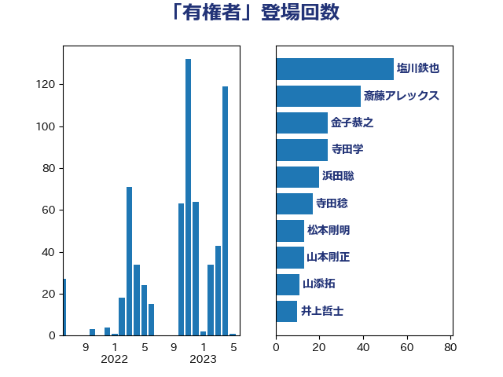

単語「有権者」

| 塩川鉄也 | 日本共産党 | 54 回 |
| 斎藤アレックス | 国民民主党 | 39 回 |
| 金子恭之 | 自由民主党 | 24 回 |
| 寺田学 | 立憲民主党 | 24 回 |
| 浜田聡 | NHK党 | 20 回 |
| 寺田稔 | 自由民主党 | 17 回 |
| 松本剛明 | 自由民主党 | 13 回 |
| 山本剛正 | 日本維新の会 | 13 回 |
| 山添拓 | 日本共産党 | 11 回 |
| 井上哲士 | 日本共産党 | 10 回 |
| 長谷川淳二 | 自由民主党 | 9 回 |
| 西岡秀子 | 国民民主党 | 8 回 |
| 牧山ひろえ | 立憲民主党 | 8 回 |
| 岸田文雄 | 自由民主党 | 8 回 |
| 伊藤岳 | 日本共産党 | 8 回 |
| 足立康史 | 日本維新の会 | 7 回 |
| 北側一雄 | 公明党 | 7 回 |
| 加藤竜祥 | 自由民主党 | 7 回 |
| 鈴木宗男 | 日本維新の会 | 6 回 |
| 野田聖子 | 自由民主党 | 6 回 |
| 遠藤良太 | 日本維新の会 | 6 回 |
| 逢沢一郎 | 自由民主党 | 6 回 |
| 輿水恵一 | 公明党 | 6 回 |
| 落合貴之 | 立憲民主党 | 6 回 |
| 芳賀道也 | 国民民主党 | 6 回 |
| 徳永久志 | 立憲民主党 | 6 回 |
| 岩谷良平 | 日本維新の会 | 6 回 |
| 尾身朝子 | 自由民主党 | 6 回 |
| 杉田水脈 | 自由民主党 | 5 回 |
| 山田賢司 | 自由民主党 | 5 回 |
| 音喜多駿 | 日本維新の会 | 4 回 |
| 福山哲郎 | 立憲民主党 | 4 回 |
| 源馬謙太郎 | 立憲民主党 | 4 回 |
| 手塚仁雄 | 立憲民主党 | 4 回 |
| 後藤祐一 | 立憲民主党 | 4 回 |
| 古川俊治 | 自由民主党 | 4 回 |
| 高市早苗 | 自由民主党 | 3 回 |
| 舩後靖彦 | れいわ新選組 | 3 回 |
| 石垣のりこ | 立憲民主党 | 3 回 |
| 玉木雄一郎 | 国民民主党 | 3 回 |
| 橘慶一郎 | 自由民主党 | 3 回 |
| 梅村聡 | 日本維新の会 | 3 回 |
| 木原誠二 | 自由民主党 | 3 回 |
| 太栄志 | 立憲民主党 | 3 回 |
| 北神圭朗 | 無所属 | 3 回 |
| 中川貴元 | 自由民主党 | 3 回 |
| 高木かおり | 日本維新の会 | 2 回 |
| 鈴木敦 | 国民民主党 | 2 回 |
| 進藤金日子 | 自由民主党 | 2 回 |
| 西村智奈美 | 立憲民主党 | 2 回 |
| 舟山康江 | 国民民主党 | 2 回 |
| 空本誠喜 | 日本維新の会 | 2 回 |
| 石橋通宏 | 立憲民主党 | 2 回 |
| 石井章 | 日本維新の会 | 2 回 |
| 田畑裕明 | 自由民主党 | 2 回 |
| 田名部匡代 | 立憲民主党 | 2 回 |
| 沢田良 | 日本維新の会 | 2 回 |
| 森山浩行 | 立憲民主党 | 2 回 |
| 柳ヶ瀬裕文 | 日本維新の会 | 2 回 |
| 林芳正 | 自由民主党 | 2 回 |
| 松野博一 | 自由民主党 | 2 回 |
| 松本洋平 | 自由民主党 | 2 回 |
| 松下新平 | 自由民主党 | 2 回 |
| 東徹 | 日本維新の会 | 2 回 |
| 杉本和巳 | 日本維新の会 | 2 回 |
| 岡田直樹 | 自由民主党 | 2 回 |
| 山口晋 | 自由民主党 | 2 回 |
| 山下芳生 | 日本共産党 | 2 回 |
| 小野泰輔 | 日本維新の会 | 2 回 |
| 宮本岳志 | 日本共産党 | 2 回 |
| 大西健介 | 立憲民主党 | 2 回 |
| 大石あきこ | れいわ新選組 | 2 回 |
| 和田有一朗 | 日本維新の会 | 2 回 |
| 吉田とも代 | 日本維新の会 | 2 回 |
| 務台俊介 | 自由民主党 | 2 回 |
| 伊藤渉 | 公明党 | 2 回 |
| 伊藤孝恵 | 国民民主党 | 2 回 |
| 中西祐介 | 自由民主党 | 2 回 |
| 鶴保庸介 | 自由民主党 | 1 回 |
| 高野光二郎 | 自由民主党 | 1 回 |
| 高良鉄美 | 無所属 | 1 回 |
| 馬淵澄夫 | 立憲民主党 | 1 回 |
| 階猛 | 立憲民主党 | 1 回 |
| 阿部弘樹 | 日本維新の会 | 1 回 |
| 鈴木憲和 | 自由民主党 | 1 回 |
| 野田国義 | 立憲民主党 | 1 回 |
| 道下大樹 | 立憲民主党 | 1 回 |
| 近藤和也 | 立憲民主党 | 1 回 |
| 赤木正幸 | 日本維新の会 | 1 回 |
| 赤嶺政賢 | 日本共産党 | 1 回 |
| 藤井比早之 | 自由民主党 | 1 回 |
| 萩生田光一 | 自由民主党 | 1 回 |
| 舞立昇治 | 自由民主党 | 1 回 |
| 羽田次郎 | 立憲民主党 | 1 回 |
| 細野豪志 | 自由民主党 | 1 回 |
| 篠原孝 | 立憲民主党 | 1 回 |
| 竹詰仁 | 国民民主党 | 1 回 |
| 福重隆浩 | 公明党 | 1 回 |
| 福島伸享 | 無所属 | 1 回 |
| 矢倉克夫 | 公明党 | 1 回 |
| 田島麻衣子 | 立憲民主党 | 1 回 |
| 湯原俊二 | 立憲民主党 | 1 回 |
| 渡辺周 | 立憲民主党 | 1 回 |
| 渡辺創 | 立憲民主党 | 1 回 |
| 浦野靖人 | 日本維新の会 | 1 回 |
| 浜野喜史 | 国民民主党 | 1 回 |
| 浜口誠 | 国民民主党 | 1 回 |
| 梅谷守 | 立憲民主党 | 1 回 |
| 梅村みずほ | 日本維新の会 | 1 回 |
| 柚木道義 | 立憲民主党 | 1 回 |
| 新垣邦男 | 立憲民主党 | 1 回 |
| 斎藤洋明 | 自由民主党 | 1 回 |
| 後藤茂之 | 自由民主党 | 1 回 |
| 平木大作 | 公明党 | 1 回 |
| 平口洋 | 自由民主党 | 1 回 |
| 岸真紀子 | 立憲民主党 | 1 回 |
| 岩屋毅 | 自由民主党 | 1 回 |
| 山谷えり子 | 自由民主党 | 1 回 |
| 山本順三 | 自由民主党 | 1 回 |
| 山本太郎 | れいわ新選組 | 1 回 |
| 山本博司 | 公明党 | 1 回 |
| 山岸一生 | 立憲民主党 | 1 回 |
| 小西洋之 | 立憲民主党 | 1 回 |
| 小泉進次郎 | 自由民主党 | 1 回 |
| 小川淳也 | 立憲民主党 | 1 回 |
| 小宮山泰子 | 立憲民主党 | 1 回 |
| 寺田静 | 無所属 | 1 回 |
| 宮口治子 | 立憲民主党 | 1 回 |
| 室井邦彦 | 日本維新の会 | 1 回 |
| 大岡敏孝 | 自由民主党 | 1 回 |
| 大串正樹 | 自由民主党 | 1 回 |
| 吉良よし子 | 日本共産党 | 1 回 |
| 吉田はるみ | 立憲民主党 | 1 回 |
| 古賀之士 | 立憲民主党 | 1 回 |
| 古川直季 | 自由民主党 | 1 回 |
| 勝目康 | 自由民主党 | 1 回 |
| 加藤勝信 | 自由民主党 | 1 回 |
| 加田裕之 | 自由民主党 | 1 回 |
| 冨樫博之 | 自由民主党 | 1 回 |
| 伴野豊 | 立憲民主党 | 1 回 |
| 伊波洋一 | 無所属 | 1 回 |
| 伊東信久 | 日本維新の会 | 1 回 |
| 五十嵐清 | 自由民主党 | 1 回 |
| 中谷一馬 | 立憲民主党 | 1 回 |
| 中川康洋 | 公明党 | 1 回 |
| 中司宏 | 日本維新の会 | 1 回 |
| 上月良祐 | 自由民主党 | 1 回 |
| おおつき紅葉 | 立憲民主党 | 1 回 |